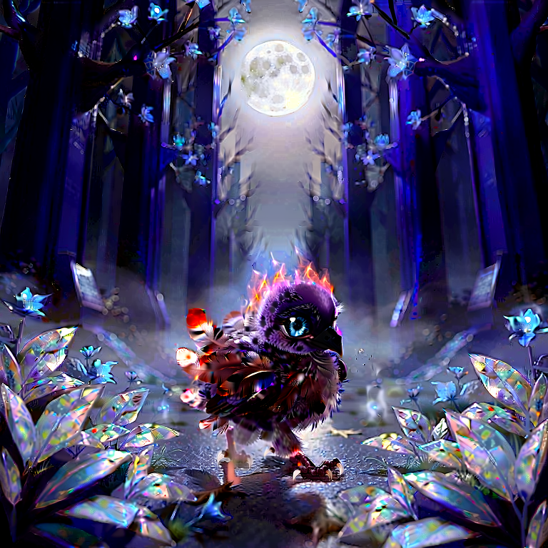
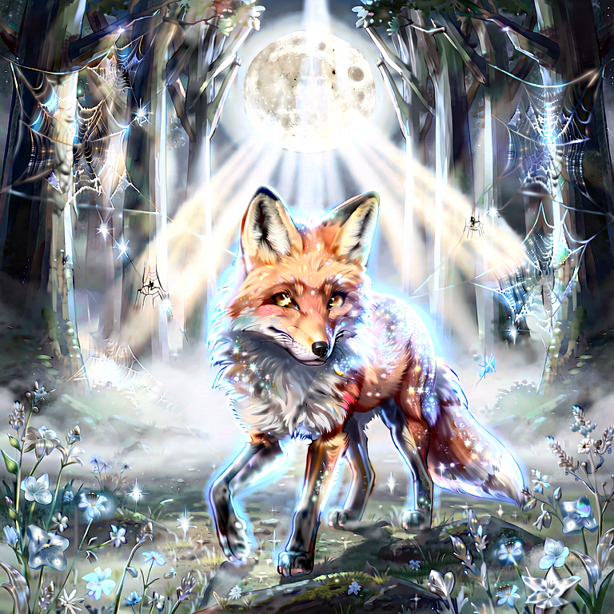
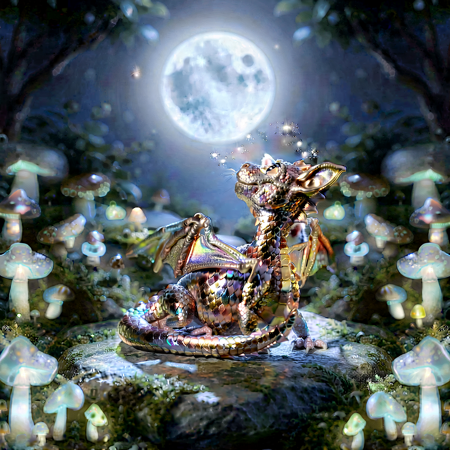
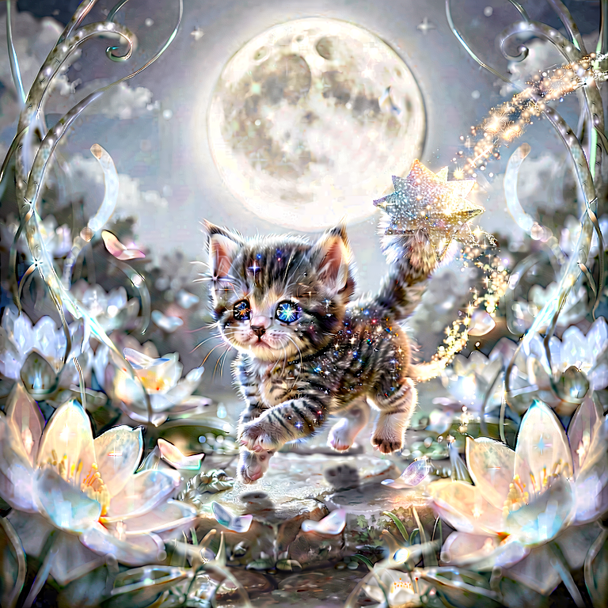
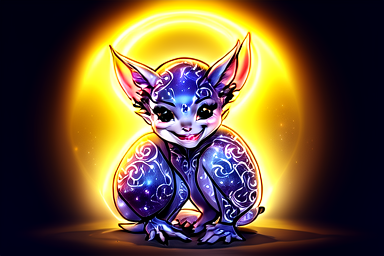
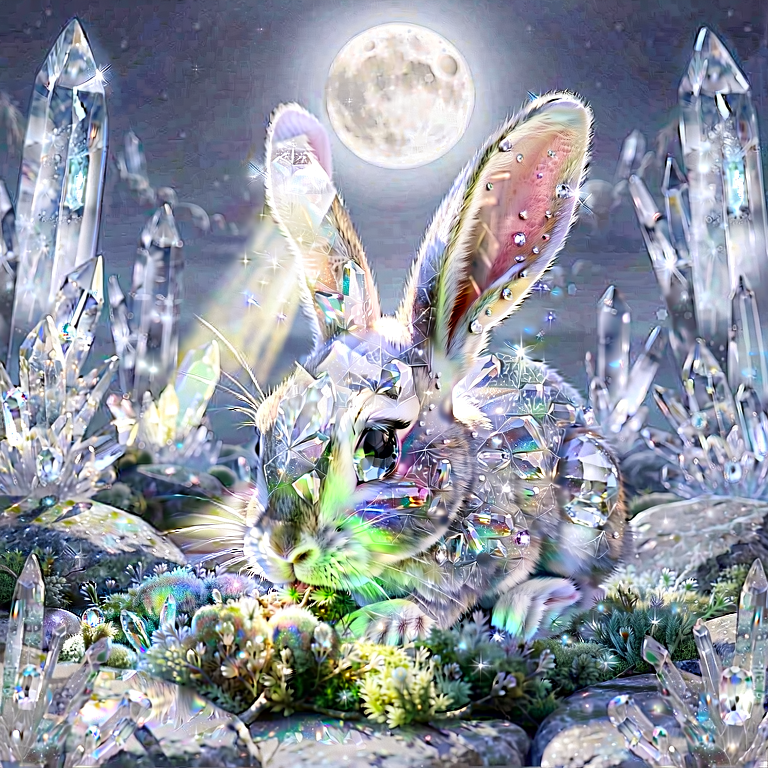

FACTION SELECTION: Choose your allegiance and shape the destiny of the Aesopian Realm.
Each faction offers unique advantages, challenges, and storylines.
Choose wisely, for your choice will echo through the ages.
Available Factions
- Feline Empire [ Main Continent ] | Syndicate [ Main Continent ]
- Rhinoceros Autocracies [ Eastern Continent ] | Marine Iguana Wreckers [ Cinder Isles ]
- Hyena Clan-Synods [ Eastern Continent ] | Walrus and Seal Gerontocracy [ Rime-Shatter Archipelago ]
- Cenote Bear Communes [ Cenote Atolls ] | Gajendra Hegemony [ Main Continent ]
- Serpent Ascendancy [ Main Continent ] | Sworn Orders [ Main Continent ]
- Silent Order [ Main Continent ] | Cuniculus Collective [ Main Continent ]
- Castor-Vallis Trust [ Main Continent ] | Chlamy-Kāriz [ Eastern Continent ]
- Chlamy-Kāriz [ Eastern Continent ] | Byssys-Weavers Guild [ Eastern Continent ]
- Canopy Synod [ Western Continent ] | Trench-Druids [ Western Continent ]
- Carapace Kontors [ Boiling Coast ] | Macrura Syndicates [ Boiling Coast ]
- Spice-Syndicate Oligarchy [ Dust-Pumice Isles ] | Albatross Sky-Wardens [ Cinder Isles ]
- Draft Kin Collectives [ Main Continent ] | Vargastelic Syndicates [ Main Continent ]
- Avian Nobility [ Main Continent ] | Kaeru'toa Shogunate [ Main Continent ]
- Gavialis Dynasty [ Main Continent ]
Faction Showcase
You can play as any of these factions
Or create your own custom faction
The Faction Showcase is a visual gallery of the diverse factions available in the Aesopian Realm.
Each faction has its own unique characteristics, strengths, and weaknesses.
Explore the gallery to learn more about each faction and find the one that best suits your play style and strategic preferences.



Powerful Factions
The Powerful Factions section highlights the most influential and dominant factions in the Aesopian Realm.
These factions have a significant impact on the game's political landscape and can shape the course of events in the realm.
Players who choose to align with these factions will have access to unique resources, abilities, and strategic advantages.



How to choose your faction
- Click each link to learn more about the faction.
- Read the faction's description and lore.
- Consider your play style and strategic preferences.